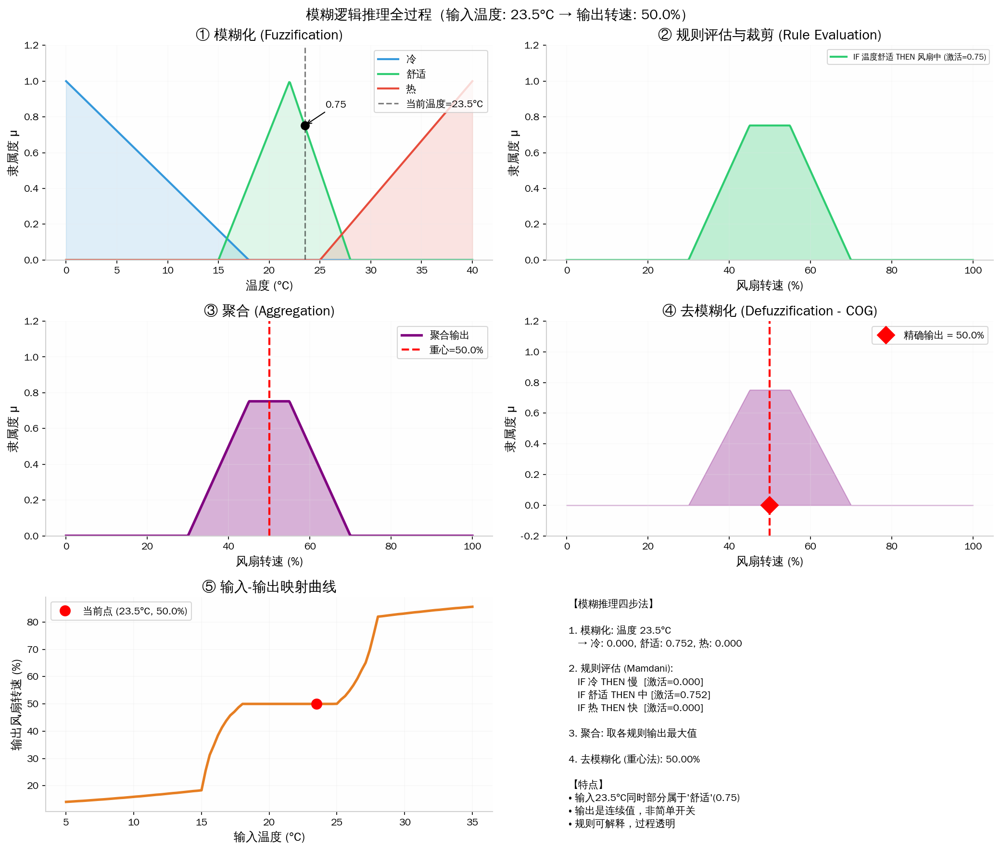

连续的向量，离散的符号
2026年09月06日 星期日我对“模糊逻辑”这个词的最早印象，来自小学时看的一部纪录片。具体讲了什么早忘光了，只记得电视里把“有点热”“差不多”这类日常说法画成了 0 到 1 之间的曲线。当时就觉得神奇：原来机器不必非黑即白，也能处理语言里含含糊糊的部分。
后来大一看游戏 AI 的书，又撞上神经网络和感知机。那会儿游戏 AI 的书里常常把神经网络和有限状态机、行为树并排讲，感知机像是书里分出的一条岔路：不再一条条写规则，而是用数据去调权重。当时没深挖，直到前几天写感知机，才重新把它的几何意义和训练过程捋了一遍。
知识图谱进我视野要更晚。去年研究怎么缓解大模型幻觉，我把它当成一套可以回查的外部知识底座：模型不该只凭参数里那些不稳定的记忆往下续写，至少要能把回答落实到明确的实体、关系、来源和时间上。今年研究 Palantir 的本体论，认识又深了一层——它关心的已经不只是“库里存着哪些事实”，还关心组织怎么把数据里的对象、属性和关系，接到现实里的权限、流程和行动上。知识表示一旦离决策近了，问题就不只是答得对不对，还包括谁依据什么做了什么、出了错怎么追溯。
这么捋下来会发现，感知机和知识图谱恰好对应两种世界观。写感知机那篇时，我手里一直是连续的量：像素是浮点数，权重是浮点数，加权和是浮点数，梯度下降是在连续的误差曲面上找下坡方向。哪怕最后过一道阶跃函数、只输出 0 或 1，感知机肚子里的计算从头到尾都是连续的。
知识图谱里就没有 \(0.847\) 这种东西，它是这样的三元组：
有边就是有边，没有就是没有。它和感知机最显著的差别，不在于一个叫“神经网络”、一个叫“图”，而在于：一个主要在连续空间里运作，另一个首先是离散的符号结构。
这句话听着简单，往下追问会牵出一串问题：模糊逻辑算哪边的？大语言模型读的明明是离散 token，肚子里怎么又全是向量？知识图谱嵌入到底是让符号“学会了”，还是在计算里把符号原有的结构给溶解了？还有，AI 生成一段很通顺的话，和它说了一句真话，中间到底差着什么？
感知机：把差异映射到连续的方向
感知机的核心式子短得很：
对一张图片来说，\(\mathbf{x}\) 是一长串像素，\(\mathbf{w}\) 是一长串权重，\(z\) 是一个实数。训练就是不断修改 \(\mathbf{w}\) 和 \(b\)，让不同类别的样本落到超平面两边。
最值得琢磨的不是“最后分成了两类”，而是中间这个 \(z\)。它没有“是不是猫”这种可读的语义，只是样本沿某个方向投影出来的数值。两个样本可以高度相似，也可以只在某种程度上相似；权重可以从 0.1 平滑地变成 0.1001；误差可以一点点往下降。整个系统默认世界上的差异可以量化、可以插值、可以被局部修正——这正是神经网络的本事所在。
一组像素“七分像 7、三分像 1”，这种程度上的差别，人很难总结成明确的规则，网络却能在高维空间里从数据中直接找到方向。代价是，当它说“这是 7”时，模型里没有一条能直接读成“因为顶部横线和右侧竖线”的规则。它有权重、有激活值，但这些不是通常意义上人能看懂的理由。
所以把神经网络简单叫“黑箱”也不太准。它不是没有内部结构，只是内部结构的基本单位不是人能直接解释的命题，而是连续的数值关系。
知识图谱：用节点、关系和命题表示世界
知识图谱走的是另一条路。它先假定世界可以分出实体和关系，再把事实写成图里的边：
在这种表示里，推理是沿着结构展开的。“甲的父亲是乙，乙的父亲是丙”，再配一条“父亲的父亲是祖父”的规则，就能推出甲和丙的关系。每一步都说得清楚：用了哪条事实，套了哪条规则，得了什么结论。这也是它能参与缓解幻觉的原因：它没法凭空保证答案为真，但能把“模型这么说”改写成一组可检查的问题——指的是哪个实体？关系在不在？证据从哪来？在什么时间范围内成立？
不过图谱并不是把现实原样搬进数据库。实体怎么划分，关系怎么命名，同一个人、设备或订单跨了系统还算不算同一个对象，这些都是本体设计必须作出的选择。研究 Palantir 本体论时让我印象很深的一点，正是它把这种选择进一步接到了业务对象和可执行操作上：一个“对象”不只是表里的一行数据，还得能在权限、流程和行动的上下文里被使用。它未必等同于哲学意义上的本体论，但提醒了人一件事：把世界整理成图谱的这套做法，从来不是中性的，它会塑造系统能识别什么、允许谁做什么。
这就是符号系统的长处：离散不等于简陋，反而意味着可以精确组合。“父亲”“祖父”“是首都”是可复用的单元；只要语法和规则还在，没见过的命题也能组合出来。数学证明、程序语言、数据库查询，靠的都是这类能力。
但离散表示也有软肋：它对名称和边界太敏感。图谱里写的是”北京”，用户输入”帝都”，没有额外知识时它们就是两个不同的字符串；图谱里也没有”差不多是首都”这种位置可以放。现实中的别名、错误和语境变化，都会让这种表示难受。
这个软肋其实维特根斯坦早就挠过。他在《哲学研究》里有两个著名的提法：一个是”一个词的意义在于它在语言中的使用”，”帝都”之所以是”北京”，靠的不是字符串匹配，而是使用这个词的语言共同体约定俗成；另一个是”家族相似”，他考察了各种”游戏”，发现它们之间没有一个共同本质，只有交叉重叠的相似——也就是说，很多日常概念本来就没有一条锋利的边界。图谱要求每个概念有明确的名字和定义，等于强迫一个边界模糊的世界穿上离散的外衣，难受是必然的。
这里还得防一个常见的混淆：token 是离散的，不等于它已经是哲学或逻辑意义上的“符号”。大语言模型的 token 当然是离散编号，但编号本身不保证有稳定指称，不保证可推理，更不保证对应现实里的对象。token 是计算机切分文本的单位；符号至少要放进一套可识别、可组合、可检验的结构里才谈得上。两者不能因为都“不连续”就混为一谈。
模糊逻辑不是符号的折中形态
模糊逻辑夹在两者中间，特别容易被误解。
布尔逻辑里，“温度高”要么真要么假；模糊逻辑允许它有隶属度，比如 30°C 对“高温”的隶属度是 0.5，35°C 是 0.8。然后可以写规则：
如果温度高，并且湿度大，那么风扇需要转得快。
乍一看，模糊逻辑好像把符号连续化了。但更准确的说法是：它仍然保留着“温度高”“湿度大”“风扇快”这些可读的概念和规则，只是把概念的边界从硬切换改成了软过渡。隶属函数怎么画、规则怎么写，照样可以拿出来审查和修改。
拿一个只有单一输入的风扇控制器看会更具体。设 23.5°C 同时属于“冷”“舒适”“热”三个集合的程度分别是 \(0\)、\(0.75\)、\(0\)；“舒适”这条规则就以 \(0.75\) 的强度激活。Mamdani 推理不会直接说“风扇转速等于 50%”，而是先把“中速”的隶属函数在 \(0.75\) 处裁平；所有被激活规则的输出逐点取最大值之后，再用重心法求出一个精确的控制量。这个例子最后算出来是 50%，但关键不在这个恰巧对称的数字上，而在中间过程没有被藏起来。

下面这段伪代码概括了整个过程：先算温度在“冷、舒适、热”三个集合里的隶属度；每条 IF...THEN... 规则再以前件的程度去限制后件；随后合并各条规则的输出，最后从合成曲线里取重心。这样得到的是连续变化的转速，而不是几个硬编码的档位。
def triangle(x, left, peak, right):
if x <= left or x >= right:
return 0.0
if x == peak:
return 1.0
return ((x - left) / (peak - left)
if x < peak else (right - x) / (right - peak))
RULES = {"冷": "慢", "舒适": "中", "热": "快"}
def infer_fan_speed(temperature):
degree = {
"冷": max(0.0, min(1.0, (18.0 - temperature) / 18.0)),
"舒适": triangle(temperature, 15.0, 22.0, 28.0),
"热": max(0.0, min(1.0, (temperature - 25.0) / 15.0)),
}
speeds = [i / 10 for i in range(1001)]
output = []
for speed in speeds:
speed_set = {
"慢": max(0.0, min(1.0, (40.0 - speed) / 40.0)),
"中": triangle(speed, 30.0, 50.0, 70.0),
"快": max(0.0, min(1.0, (speed - 60.0) / 40.0)),
}
output.append(max(min(degree[before], speed_set[after])
for before, after in RULES.items()))
return sum(speed * mu for speed, mu in zip(speeds, output)) / sum(output)
print(f"{infer_fan_speed(23.5):.1f}%") # 50.0%
所以它不像神经网络那样把知识藏在权重里，也没有解决知识图谱的全部问题。它处理的是另一种不确定性：不是“不知道事实成立不成立”，而是日常概念本来就没有清晰的边界。30°C 算不算高温，和“北京是不是中国首都”不是同一种问题。前者需要约定、场景和程度，后者主要需要事实来源和时间范围。
这个区分很细，但很有用。我们习惯把所有“不确定”统统叫成概率，反而把问题搅混了。至少可以先问一句：这是概念边界的模糊、数据噪声带来的统计不确定，还是事实本身还没被证实？它们适合的工具并不一样。
这也解释了为什么今天很少有人把模糊逻辑当通用 AI 的中心议题。视觉、语言、推荐这类任务往往有大量数据，端到端训练的神经网络更容易从中学到特征和规则；模糊系统的隶属函数与规则，得靠人来设计和维护。但在数据不多、规则必须向操作者讲清楚、控制器需要平稳过渡的地方，它并没有过时。它不是要跟大模型抢通用智能的主导权，而是一种把领域经验写成可运行、可检查的控制逻辑的方式。
把符号映射到向量：桥，还是代价？
今天最常见的折中方案，是把离散结构映射到连续向量里。
知识图谱嵌入给实体和关系学出向量；语言模型把 token 变成 embedding；检索增强生成（RAG）先检索外部文档，再由生成模型组织语言。这么做很实用：连续空间擅长找相似、补全缺失、扛住噪声；离散的文档、数据库和图谱又能提供出处与约束。
但“融合”这个词说得太轻松，容易盖住代价。把“北京”“首都”“中国”变成三段浮点数后，机器确实更容易算相似性，可它也不再天然保留原来的离散关系。向量距离近，可能是语义相近，也可能只是它们在训练语料里经常一起出现——它不像图谱里那条边，是摆在那儿就能核查的事实。
所以我现在更愿意把这类技术看成翻译，而不是统一：从符号翻译到向量，换来可学习和容错；从向量翻译回可读的文本或规则，换来解释和核验。翻译忠不忠实，不能靠“模型看起来很聪明”判断，还是得回到具体任务上。
比如搜索推荐，“意思差不多”通常正好是想要的；医学诊断、法律条款、财务数字里的“差不多”就可能出大事。不能因为向量空间是连续的，就把所有问题都往里塞。
金观涛提到的问题：通顺，为什么还不够
上面这些还只是 AI 的技术语言。读金观涛近年的《消失的真实》、《真实与虚拟》时，我碰到一个更难回避的问题：一个符号串哪怕完全可理解，凭什么就是真的？
我不想在这里替金师的“真实性哲学”下完整结论——那套体系得直接读原书，几段二手概括很容易把它过度简化甚至弄歪。但其中有一条线索和 AI 放在一起看确实有启发：符号系统、经验和主体参与，谁也不能轻易还原成谁。
数学公式可以在相对封闭的规则里检验；实验结论需要可重复的操控和观察；自然语言里的一句话，还牵扯说话者、场景、承诺、行动和责任。它们都用符号，却不是同一种“真”。
这正好显出大语言模型的一个核心边界。模型能把“像是真的”的句子续写得极好，因为它学的就是人类如何在文本里连接词、概念和论证。可它没有天然的实验装置，说话也不用自己负责，更不会因为一句错话自动得到现实的反馈校正。它可以引用一篇不存在的论文，不是因为想撒谎，而是因为“像一条合理引用”在生成概率上完全可能比“停下来承认不知道”更容易生成。
这不是说 AI 输出必然不真。结合检索、数据库、工具调用和人工复核之后，输出是可以站得住脚的。只是这种真实不来自“语言模型把句子写顺了”，而来自它跟外部世界建立的核验链条：资料从哪来，版本是什么，谁能复查，错了怎么纠正。
如果一定要借个形象的说法，我会说：模型不是连接两岸的桥本身，顶多是个很会砌砖的工人。砖砌得漂亮，不等于桥真的通了。
回到最开始那句话
“符号是不连续的”这句话，现在可以说得更完整一点：
- 符号的离散性，让它能被精确引用、组合、推理和核查；
- 向量的连续性，让它能表达相似、渐变、噪声，能从数据里学东西；
- 模糊逻辑提醒我们，有些概念的边界本来就不是一刀切；
- 真实的问题比前三者都多一层：这些表示最终如何被现实中的行动、观察和责任约束。
我觉得这比“符号主义和连接主义谁会赢”的问法更有意义。人脑和社会从来不是只选一种表示：我们既要说清楚一个地址、一道定理和一份合同，也要凭感觉认出一张脸、一种语气和一个不太对劲的趋势。AI 也一样。真正难的不是让向量替代符号，或让规则取代数据，而是知道什么时候必须连续，什么时候必须离散，什么时候又必须停下来，回到现实里检验。
参考资料
- Frank Rosenblatt, The Perceptron: A Probabilistic Model for Information Storage and Organization in the Brain, 1958
- Lotfi A. Zadeh, Fuzzy Sets, 1965
- 金观涛，《消失的真实》；《真实与虚拟》
- 路德维希·维特根斯坦，《哲学研究》
- Stuart Russell、Peter Norvig，《人工智能：一种现代的方法》（知识表示、逻辑推理与机器学习相关章节）
- Palantir 文档，Ontology（关于业务对象、关系与行动的产品性本体模型）